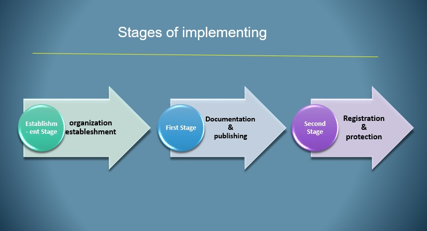

An Eritrean civil initiative that seeks to document and protect the
urban heritage of the ancient city of Massawa and spread awareness
about it. Its idea was launched by the Samhar Cultural Association in
Stockholm, Sweden in February 2020, coinciding with the 30th
anniversary of the liberation of Massawa from the Ethiopian
occupation
The goal of the initiative
The inscription of the ancient city of Massawa (the city
of urban diversity in Africa) on the World Heritage List of
the United Nations Educational, Scientific and Cultural
Organization (UNESCO)
Stages and objectives of the initiative
1. Launching the idea of the initiative
The idea of the initiative was launched in Stockholm,
Sweden, in February 2020, coinciding with the 30th
anniversary of the city’s liberation from the Ethiopian
occupation.
2. Teamwork Composition
A specialized founding working group has been formed for the initiative.
3. Formation of the old city of Massawa Body group
Work to form this group is currently on going
4.Institutional building of the initiative
The initiative was registered as a non-governmental organization in Norway at the end of 2023.
Stages of implementing the initiative Establishment stage

First stage:
1. Identifying the boundary of
the concerned area to be
protected.
The historic city of Massawa has been identified in the old
city on the island of Bazie, the Sahaba Mosque, and the Saraya Palace on Twalut Island.
2.Determining a preliminary list of the most important
historical buildings to be protected
A preliminary list of buildings of historical and
artistic value has been established in the city.